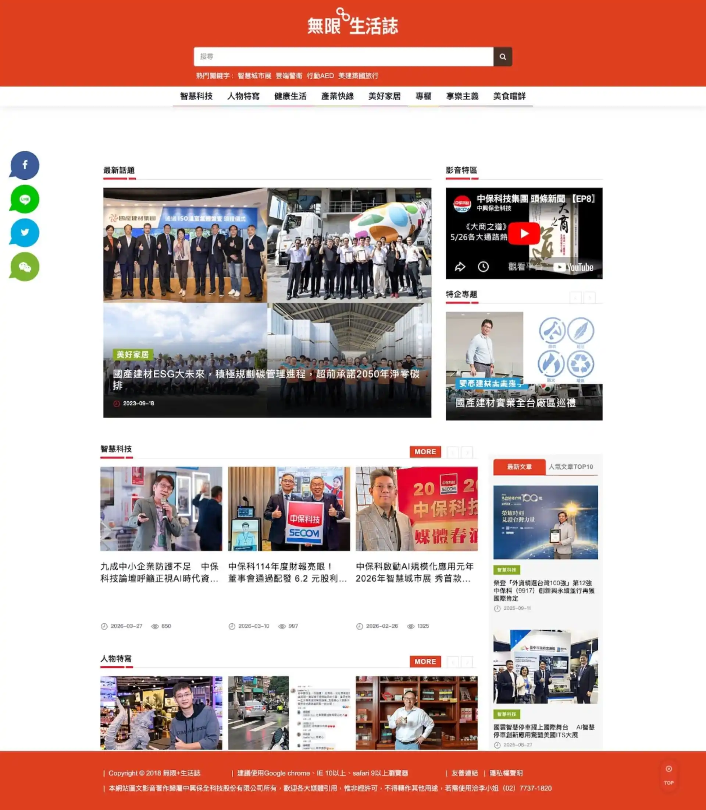
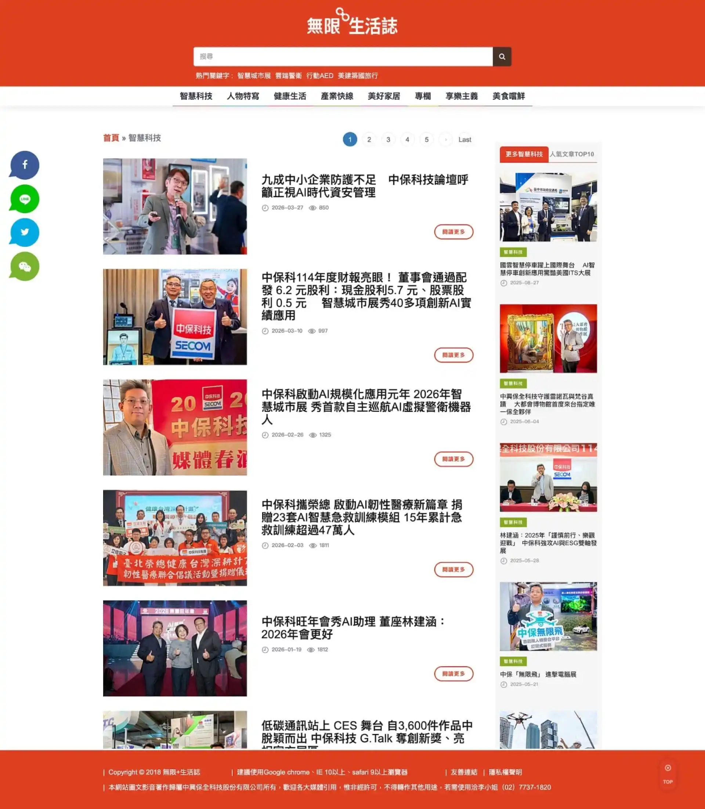
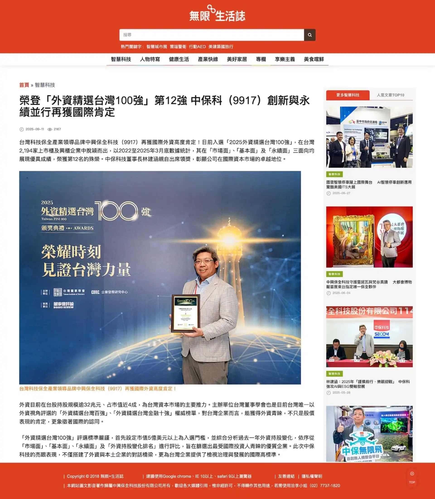

中保無限+生活誌

中興保全科技希望建立一個官方的內容媒體平台「中保無限+生活誌」，打破傳統保全產業冷冰冰的技術形象，讓品牌故事走進日常生活。我們協助規劃整體內容架構、開發客製化的文章管理後台、建置分類導覽與搜尋系統，並整合社群分享與 SEO 基礎設施，讓每一篇文章都具備被搜尋引擎收錄與社群擴散的條件，協助中保科技集團在數位內容的戰場上，建立起專業且有溫度的品牌聲量。
專案成果摘要
- ✅ 核心目標： 建立企業媒體平台，將智慧科技轉譯為具溫度的生活故事。
- ✅ 關鍵優化： 八大頻道分類架構、客製化 CMS 後台、完整 JSON-LD 結構化佈建。
- ✅ 行銷效益： 提升內容在搜尋引擎與社群的擴散力，有效強化品牌數位資產權威性。
背景與挑戰
中興保全科技（SECOM）成立已超過四十年，是台灣家喻戶曉的保全品牌，業務範圍涵蓋居家安全、智慧城市、AI 科技應用等多元領域。隨著集團版圖持續擴張，觸角延伸至餐飲、健康照護、建築美學等生活產業，品牌需要一個能承載如此多元內容的數位平台，讓消費者重新認識中保科技集團的全貌。
然而，保全業給人的印象通常是嚴肅且技術導向的。如何讓「智慧科技」與「日常生活」自然結合，用內容說一個消費者願意聽的品牌故事，同時又不失專業權威，這是整個專案最核心的命題。

關鍵痛點
中保科技集團旗下的服務涵蓋 AIoT 解決方案、AED 佈建、智慧建築、餐飲品牌等，內容面向相當廣泛，但過往缺乏一個統一的數位內容平台來進行品牌溝通。資訊散落在各事業體的網站與社群帳號中，無法形成有效的品牌聚合力。集團需要一個能同時容納「智慧科技」、「人物特寫」、「健康生活」、「美好家居」、「產業快線」、「享樂主義」、「專欄」及「美食嚐鮮」等多元頻道的媒體平台，並且在後台管理上足夠靈活，讓編輯團隊能高效維運。

專案目標
為中保科技集團建置一個兼具「品牌專業度」與「生活親和力」的內容媒體網站，提供完整的文章管理系統、多頻道分類架構、智慧搜尋、影音整合，以及社群擴散機制。平台要能支撐長期且大量的內容產出，同時為每一篇文章配備 SEO 基礎架構與結構化資料，讓高品質內容在搜尋引擎與社群網路上都能被有效觸及。
解決問題的過程
生活誌的定位介於企業官網與獨立媒體之間，它既要展現品牌專業度，也要有獨立媒體的可讀性與生活感。在規劃初期，我們花了大量時間釐清內容策略的邊界：哪些主題適合由品牌自己敘事、哪些適合引入外部觀點、各頻道之間如何做出差異化卻又維持整體調性。
確認方向後，我們才進入系統架構的規劃與視覺設計。
多頻道分類架構，讓內容各歸其位
集團的服務版圖橫跨科技、生活、餐飲、建築等領域，若所有文章混在一起呈現，使用者會難以聚焦，也無法針對特定受眾建立專家印象。
我們建立了「智慧科技」、「人物特寫」、「健康生活」、「產業快線」、「美好家居」、「專欄」、「享樂主義」、「美食嚐鮮」八大頻道分類。每個頻道獨立設定 SEO Meta Tag，擁有各自的品牌描述與社群分享資訊，讓搜尋引擎能精準辨識每個頻道的主題定位。首頁則採用模組化佈局，各頻道的最新文章以卡片形式分區呈現，使用者能在同一頁快速掃視所有領域的最新動態。
客製化文章管理後台，支撐大量內容產出
一個內容媒體平台的生命力，取決於後台的編輯效率。編輯團隊每天需要處理大量稿件，如果後台操作不順暢、欄位設計不貼合工作流程，會直接影響產出品質與速度。
我們開發了包含文章審核流程（草稿、待審、已發布）、排程上架、瀏覽次數統計、關鍵字標籤系統、多張首圖管理、SEO 欄位（Title、Description、Facebook 專用標題與封面），以及精選文章推薦等功能的後台管理系統。同時，也為圖片建置 CDN 服務與自動化搬遷機制，確保在大量圖文內容累積後，頁面載入速度仍能維持水準。
搜尋與關鍵字導覽，縮短使用者的路徑
當文章數量累積至數百甚至上千篇，使用者若只能透過分類瀏覽來找文章，效率會大幅下降。
我們為平台建置了智慧搜尋系統，搜尋範圍涵蓋文章標題、副標題與內文全文檢索。搜尋框預設提供熱門關鍵字推薦（如：智慧城市展、行動 AED），讓使用者即使不確定搜尋詞，也能快速進入感興趣的主題。同時，每篇文章都配置了關鍵字標籤，點擊任一標籤即可查看同主題的延伸文章，建立起內容之間的關聯網絡。
SEO 與結構化資料的完整佈建
內容行銷的長期效益，仰賴搜尋引擎的穩定曝光。如果平台在技術面上沒有做好 SEO 基礎建設，即便文章品質再好，也難以被目標受眾搜尋到。
我們在系統層面導入了 Open Graph 標籤、JSON-LD 結構化資料（Organization、BreadcrumbList、NewsArticle），確保每篇文章在 Google 搜尋結果與社群平台分享時，都能呈現完整的標題、描述與縮圖。每個分類頁面也各自擁有獨立的 Meta 設定，而非套用統一模板，讓搜尋引擎能更精確地理解每個頻道的內容主題。網址採用語意化的 Friendly Slug 命名規則，進一步強化搜尋引擎的收錄品質。
社群擴散與外部平台整合
好的內容需要被看見，平台必須為每篇文章提供便捷的社群分享管道。
我們整合了 LINE、Facebook、Twitter 等一鍵分享功能，並嵌入 Facebook 留言模組，讓讀者可以直接在文章頁面互動討論。首頁側邊固定浮動的社群按鈕，則讓使用者在任何瀏覽深度都能快速分享。影音內容的部分，透過 YouTube 嵌入整合，首頁設有影音專區，搭配文章內頁的 YouTube 封面模式，讓影音內容與圖文內容共存於同一平台，提升內容的多樣性與使用者停留時間。
看看作品成果
「中保無限+生活誌」成功地將一個傳統保全企業的形象，轉化為兼具專業深度與生活溫度的內容品牌。平台以雜誌式的模組化佈局呈現，鮮紅色品牌色點綴於標題與圖示之間，搭配大量純白空間，營造出現代、乾淨且權威的閱讀氛圍。卡片式的排版設計讓資訊分塊明確，使用者能快速掃視、精準定位自己感興趣的內容。
整體視覺採用大量高品質的實境攝影照片，強調「人」與「空間」的互動，有效降低了科技產業的距離感。字體選用清晰的無襯線字體，確保長篇文章的閱讀舒適度。響應式設計則讓行動裝置使用者也能擁有流暢的閱讀體驗。
這個平台已經不僅是一個資訊發布網站，更是中保科技集團與消費者溝通的橋樑，將複雜的 AIoT 解決方案轉化為消費者讀得懂的生活故事。
- 雜誌式首頁設計： 模組化區塊呈現八大頻道最新文章，搭配最新話題輪播、影音專區與特企專題，提供多元的內容探索入口。
- 垂直深度的分類頻道： 各頻道獨立運作，擁有專屬的 SEO 設定與品牌描述，強化各領域的專家形象與搜尋引擎表現。
- 文章推薦與延伸閱讀： 每篇文章結合手動推薦、關鍵字比對與同分類文章等多重邏輯，自動產生延伸閱讀清單，有效提升使用者的站內瀏覽深度。
- 精選文章與排序機制： 後台支援精選文章的手動排序與首頁各區塊的彈性配置，編輯團隊能即時調度重點內容的曝光位置。
- 完整的 SEO 技術建設： 涵蓋 Open Graph、JSON-LD 結構化資料、Friendly URL、分類獨立 Meta、全文搜尋索引等，為內容行銷的長期經營奠定技術基礎。


